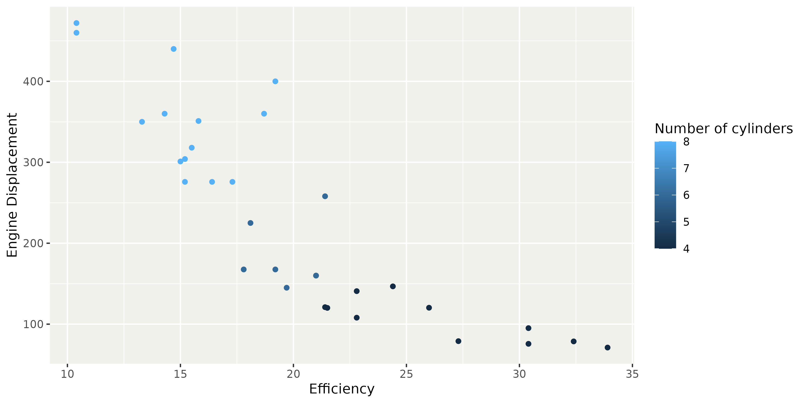
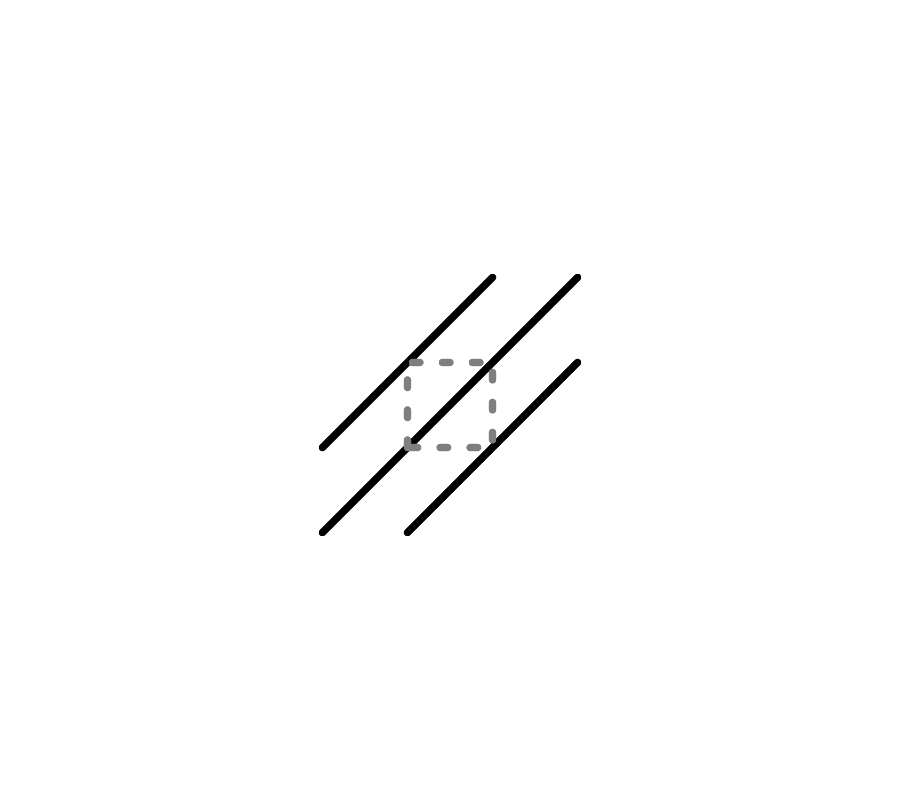

Modern ggplot2
Today’s topics
- Headings
- Patterns & gradients
- Delayed evaluation
- Polar coordinates
- Facets
Headings
Better default titles for variables
- Column metadata
- Data dictionary
Column metadata
- ‘Pretty labels’ implemented as
"label"attribute in columns. - Implemented in Hmisc, tinylabels, haven, labelled & sjlabelled
Column metadata
- ‘Pretty labels’ implemented as
"label"attribute in columns. - Implemented in Hmisc, tinylabels, haven, labelled & sjlabelled
- Careful with label attribute stability
Column metadata
Label attribute automatically detected.
Data dictionary
Example dictionary for mtcars
dict <- tibble::tribble(
~column, ~label, ~unit, ~note,
"mpg", "Efficiency", "mi/gal", "Gallons are US gallons",
"cyl", "Number of cylinders", "", "",
"disp", "Engine Displacement", "in^3", "",
"am", "Transmission", "", "0 = automatic, 1 = manual"
# Additional rows for the other variables
)
dict# A tibble: 4 × 4
column label unit note
<chr> <chr> <chr> <chr>
1 mpg Efficiency "mi/gal" "Gallons are US gallons"
2 cyl Number of cylinders "" ""
3 disp Engine Displacement "in^3" ""
4 am Transmission "" "0 = automatic, 1 = manual"Data dictionary
Preparing the dictionary for ggplot2 labels
Data dictionary
Pros
- Label variables directly, rather than aesthetics
- Rewards habit of annotating data
- Reusable within document
Pros
- Label variables directly, rather than aesthetics
- Rewards habit of annotating data
- Reusable within document
Cons
- Extra effort for ‘naked’ data
- Expressions like
factor(cyl)orcyl + 1do not get automatic labels
Headings: summary
attr(data$var, "label")labs(dictionary)
Exercise 2.1
05:00
Patterns and gradients
In R 4.1 the grid package introduced patterns and gradients.
grid::linearGradient()grid::radialGradient()grid::pattern()
We allow these as fill aesthetic in ggplot2.
Patterns can aid in cases of colour vision deficiency.
Gradients
Simple examples of linear and radial gradients.
# A vector of 15 colours
colours <- rev(hcl.colors(15, "Sunset"))
library(grid)
linear <- linearGradient(
colours = colours,
# Parametrised like a rectangle
x1 = 0.5, x2 = 0.5,
y1 = 0.0, y2 = 1.0
)
radial <- radialGradient(
colours = colours,
# Parametrised like two circles
cx1 = 0.8, cy1 = 0.8, r1 = 0.2,
cx2 = 0.5, cy2 = 0.5, r2 = 0.5,
# Draw separately for every area
group = FALSE
)Gradients
Use these gradients by providing them as a list.
Ribbon gradient
Ribbon geometries now render a varying fill aesthetic as a gradient.
Patterns
Patterns are more complicated. You may need to know a little bit of grid to get these right. Here we’re using a diagonal line as a pattern.
Patterns
Like gradients, patterns can be given as a list.
Patterns
To ‘fix’ patterning artefacts, you may need to adjust the strokes in the inner drawing.
Patterns
Using patterns as a scale.
Patterns galore
Using the gridpattern package to easily generate patterns.
herringbone <- gridpattern::patternFill(
pattern = "polygon_tiling",
type = "herringbone",
spacing = 0.2,
units = "cm",
colour = "grey40",
linewidth = 0.3
)
hexagons <- gridpattern::patternFill(
pattern = "polygon_tiling",
type = "hexagonal",
spacing = 0.2,
units = "cm",
colour = "grey40",
linewidth = 0.3
)
waves <- gridpattern::patternFill(
pattern = "wave",
spacing = 0.2,
units = "cm",
colour = "grey40",
linewidth = 0.3
)Patterns galore
Using the gridpattern package to easily generate patterns.
Patterns galore
Parametrised patterns with the ggpattern package.
Patterns galore
Emoji isotype plot using text patterns.
Code
# Helper function
width <- unit(20, "pt")
patternise_text <- function(text) {
lapply(text, function(string) {
grob <- textGrob(string, x = 0, hjust = 0, gp = gpar(fontsize = 18))
pattern(
grob,
x = 0, hjust = 0,
width = width,
extend = "repeat",
# Center text per bar using height/group
height = unit(1, "npc"),
group = FALSE
)
})
}
# Stats for the Netherlands
df <- data.frame(
animal = c("chickens", "pigs", "cows", "sheep", "goats", "humans"),
amount = c(99900000, 11400000, 3800000, 850000, 480000, 17990000)
)
ggplot(df, aes(amount, animal, fill = animal)) +
geom_col() +
scale_fill_manual(
values = patternise_text(c(
"chickens" = "üêì",
"pigs" = "üêñ",
"cows" = "üêÑ",
"sheep" = "üêë",
"goats" = "üêê",
"humans" = "üßç"
))
) +
scale_x_continuous(
labels = scales::label_number(scale = 1e-6, suffix = "M")
) +
theme(
legend.key.width = width,
legend.key.height = unit(18, "pt") # see fontsize in pattern
)Patterns and gradients: summary
- grid for most control over patterns.
grid::pattern(),grid::linearGradient(),grid::radialGradient()
- gridpattern for preformatted patterns.
gridpattern::patternFill()
- ggpattern for mapping data to patterns.
- Aesthetics (
pattern_density) - Geom layers (
ggpattern::geom_boxplot_pattern()) - Scales (
ggpattern::scale_pattern_density_continuous())
- Aesthetics (
Exercise 2.2
05:00
Delayed evaluation
With regards to evaluation, there are three stages:
- Direct input at start
- After computing stat
- After scale mapping
Direct input
Data available from the start, when mapped from data columns.
✅ aes(x = displ, y = hwy)
❌ Unmapped aesthetics like geom_bar(fill = "red")
❌ Data columns that are not included in aes()
After computing stat
In addition to aesthetics, computed variables become available.
- Section in e.g.
?stat_density - Accessible via
after_stat() - Redirection in
Stat*$default_aes
After computing stat
Using after_stat() yourself to redirect/modify computed variables.
After computing stat
You may have run into a histogram/density misalignment problem.
After computing stat
This can be fixed by using the density computed variable in the histogram.
After computing stat
Or scaling the count computed variable in the density.
After scales
At this stage in the plot, we have mapped variables.
- Determined by scale’s
palette - Values now have graphical interpretation
colour:"#4B0055"size:12shape:"circle filled"/21linetype:"solid"/1
- Access via
after_scale()
After scales
A typical use of after_scale() is to derive colours from colour to fill or vice versa.
After scales
A nice benefit of using after_scale() is that you derive colours, so you can still swap out scales.
After scales
Another use case can be to create half-geometries.
Staging
When you need a combination of direct input, after stat or after scale modifications, you can use stage().
stage(x)is equivalent tox.stage(after_stat = x)is equivalent toafter_stat(x).stage(after_scale = x)is equivalent toafter_scale(x).
Staging
A typical use case is when you want to initialise the aesthetic with one column, and later modify the mapped values.
Staging
Another use case is to reposition labels after computing a statistic.
Caveat
Staging function on their own are inert.
They need to be put in aes().
Delayed evaluation: summary
after_stat()to access computed variables.after_scale()to redirect mapped values.stage()to initiate and delay modification.
Exercise 2.3
03:00
Polar coordinates
The classic coord_polar() is superseded by coord_radial().
expandparameter- Arbitrary sectors
- Donuts
Polar coordinates
Helpful to always examine plot in Cartesian coordinates.
Code
p <- ggplot(mpg, aes(y = factor(1), fill = factor(drv))) +
geom_bar() +
# Add labels
stat_count(
aes(label = after_stat(paste0(fill, " =\n", count))),
geom = "text",
position = position_stack(vjust = 0.5)
) +
# Turn off y-axis and legend
scale_y_discrete(guide = "none", name = NULL) +
scale_fill_discrete(guide = "none")
pPolar versus radial
Differences between coord_polar() and coord_radial().
Polar versus radial
Set expand = FALSE for use in pie charts.
Polar axes
coord_radial() interfaces with guide system mostly via guide_axis_theta(). Also note the text angles.
Partial circles
We’re no longer restricted to complete circles.
Partial circles
Switching a pie chart to a donut chart is as easy as setting the inner.radius argument.
Partial circles
We can combine partial polar coordinates with donuts.
Polar coordinates: summary
coord_radial()replacescoord_polar()- Partial circles:
start&end - Donut:
inner.radius
Exercise 2.4
03:00
Facets
- Display of inner axes
- Layer layout
- Panel ordering
Display of inner axes
Display of inner axes
Inner axes can be exposed, for all directions or x or y individually.
Display of inner axes
We can confine labels, so inner axes only display tick marks.
Layout
Layers have a layout argument that can be interpreted by facets.
Layout
facet_wrap() and facet_grid() allow placement at certain panels.
Wrap panel order
New panel ordering settings in dir argument.
as.tableis now absorbed indir- Use two-letter combination of
t,r,b,lt= topr= rightb= bottoml= left
- Combinations determines starting point, e.g.
"br"starts in the bottom-right. - First letter indicates growing direction, e.g.
"br"grows bottom-to-top before right-to-left.
Wrap panel order
The default order is "lt".
Wrap panel order

Facets: summary
- Display of inner axes
axes = "margins"/"all"/"all_x"/"all_y"axis.labels = "all"/"margins"/"all_x"/"all_y"
layer(layout)argument- Repeat data across panels
- Confine data to individual panels
facet_wrap(dir)sets panel layout- Two letter code determine start position
- First letter determines growing direction
Exercise 2.5
03:00
Next session: Text rendering and font use